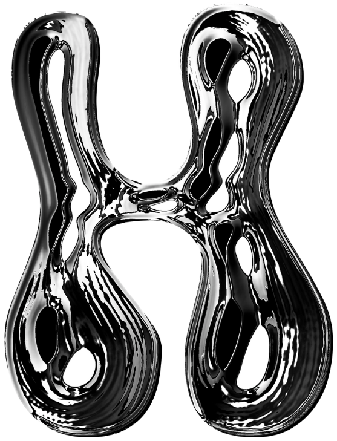
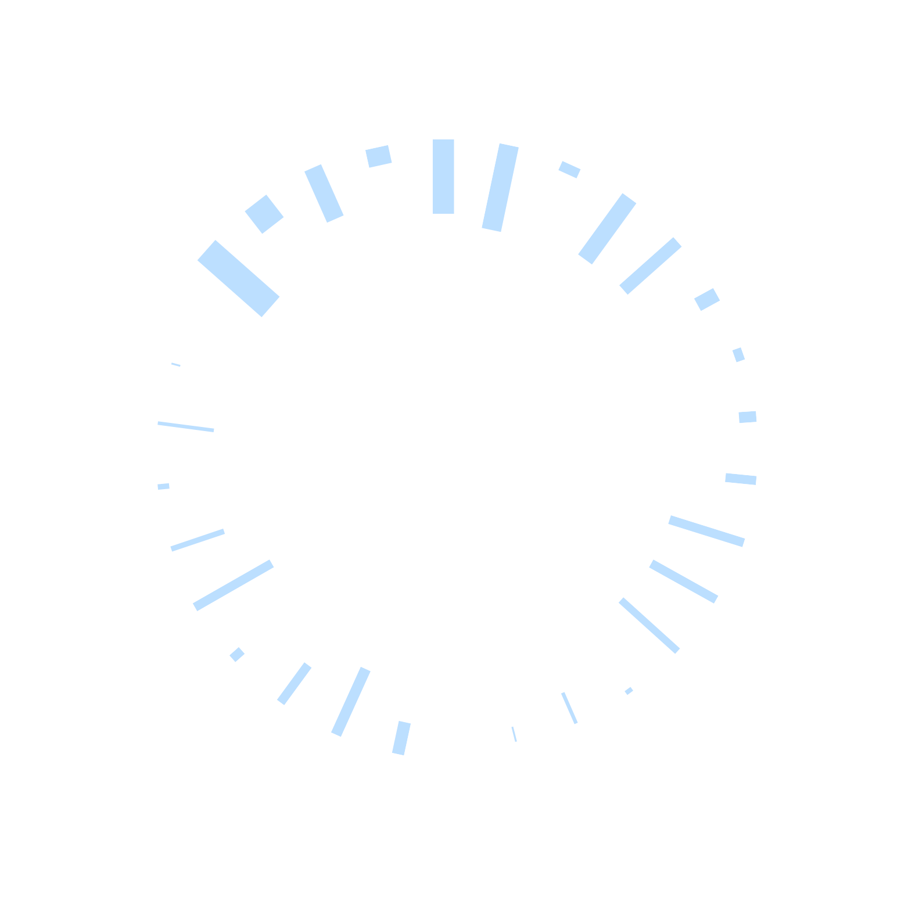

Personal Projects
Here are some technologies I have been working with: Python, C++, HTML, CSS, JavaScript, Tensorflow, Scrikit-learn, Anaconda, GitHub



I am Shana Kesia Nursoo, a second year computer science student at Simon Fraser University. I am currently a member of WiCs and the previous head of STEMpowerment and Chapters program at Canada's National Stem Fellowship.
As the head of STEMPowerement and the Chapters program at Stem Fellowship, I gained experience as a mentor and organizer for the Big Data Challege, an analytics-related competition for scholarly publications and manuscripts
As a member of WiCs at SFU, I participated in a mentorship program for highschool girls interested in coding. I was also involved in the organization of WiCs conferences.
VG5000 by Justin Bihan. Distributed by velvetyne.fr.